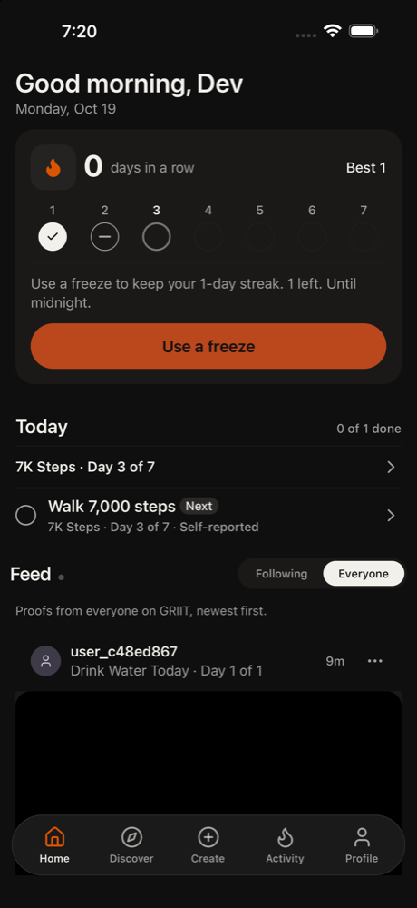

1. home scroll 50%,60%
The app says I have 0 days in a row, best 1. I last secured Oct 17, so Oct 18 (yesterday) was missed and the streak broke. It offers a freeze to keep a 1-day streak, 1 left, until midnight. Today I have Walk 7,000 steps, day 3 of 7, still to do. Let me look around first before de
Confusion: Streak shows 0 but also says 'keep your 1-day streak' - which is it?
neutral · 13392ms